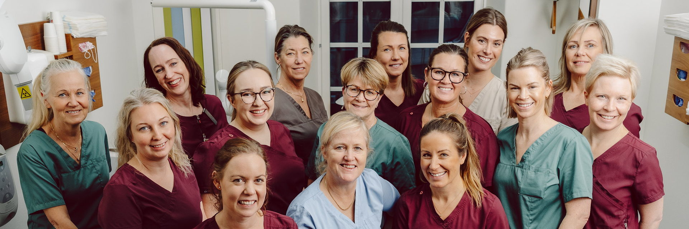
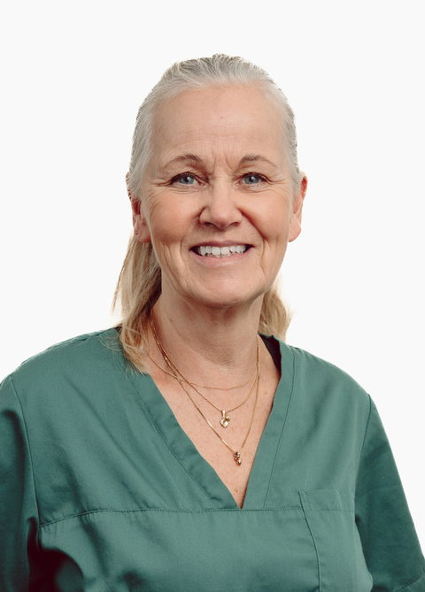
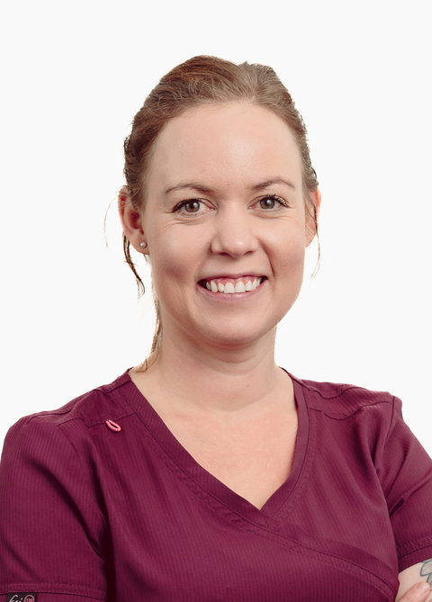
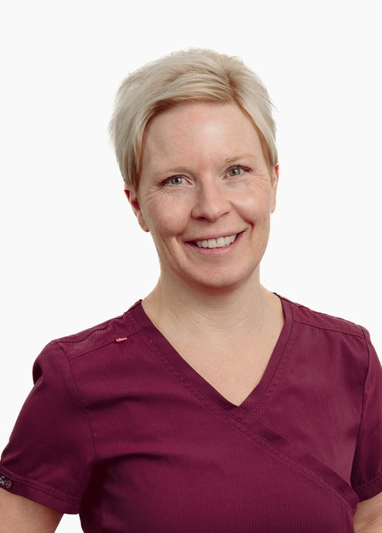
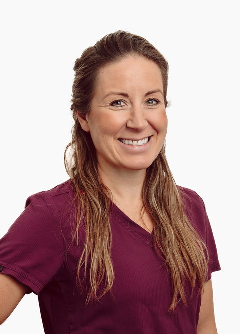
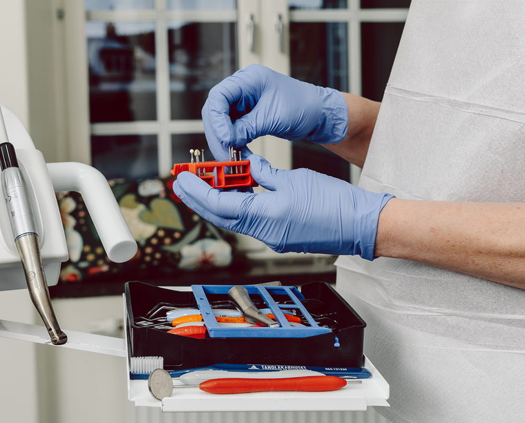

Ansiktena bakom
Tandläkarhuset
Tandläkare, tandhygienist, tandsköterskor och reception, samlade i två team under samma tak. Du möter samma ansikten gång på gång.

Team Charlotte
Charlotte Lagerfalk Leijon
Team Marielle
Marielle Sinclair


Ingenting sker
bakom stängda dörrar
Hela teamet är med dig genom behandlingen. Hygien är A och O på en tandvårdsmottagning, och vi gör inget av det i skymundan: du kan se vårt arbete i sterilen, där instrumenten till din behandling görs i ordning.
Kvalitetsarbetet är inte ett projekt utan en vana. Vi är kvalitetscertifierade med en uppdatering varje år, och arbetar ständigt med att förbättra och organisera hur vi jobbar.

De som utför vården
äger också verksamheten
Tandläkarhuset är en del av Praktikertjänst AB, ett svenskt vårdbolag som ägs av tandläkare, läkare och sjukgymnaster.
I vår praktik möts du av en fräsch och hemtrevlig atmosfär. I vårt stora väntrum får både barn och vuxna plats.
Från branden
till Kyrkgatan 60
Mottagningen låg på Prästgatan 30, i Centralpalatset.
Centralpalatset, med anor från 1800-talet, brann ner.
Invigning på Kyrkgatan 60. Sex behandlingsrum, nya lokaler, och en verksamhet som trivs fantastiskt bra.